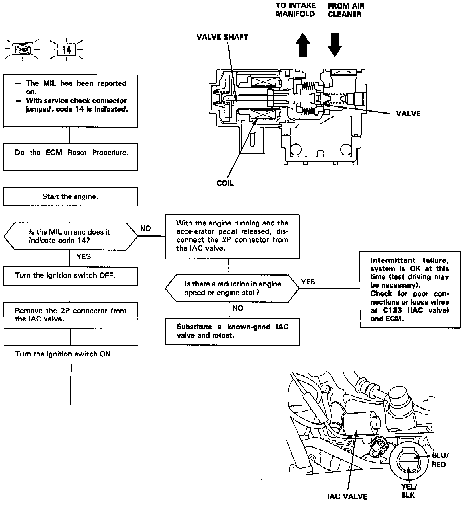
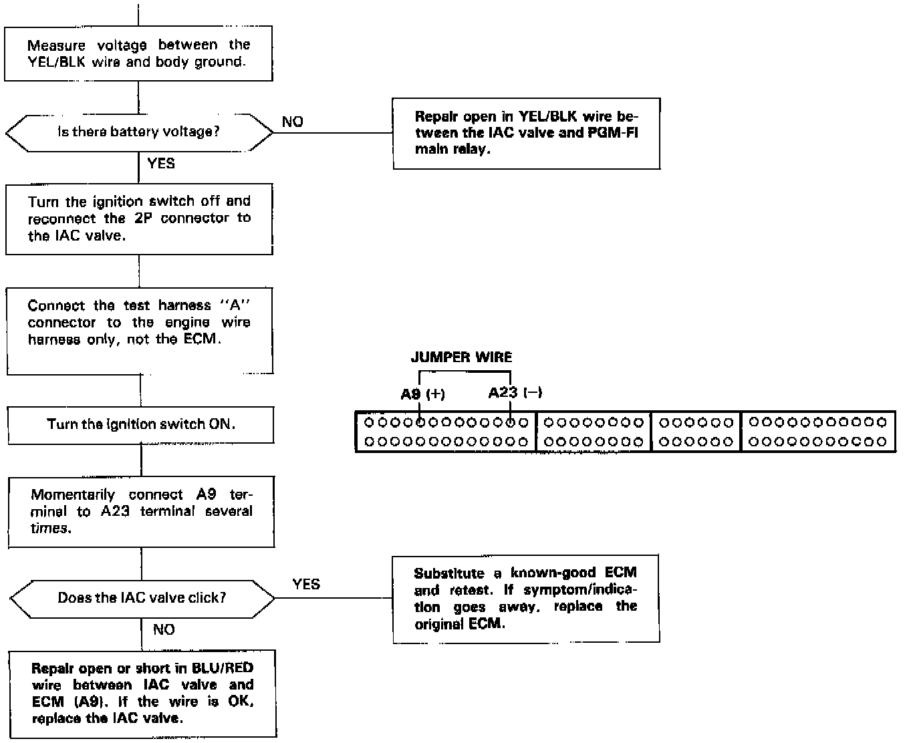

Idle Speed/Throttle Actuator - Electronic: Testing and Inspection


1. The Malfunction Indicator Lamp indicates Diagnostic Trouble Code 14: A problem in the Idle Air Control Valve circuit. Perform diagnostics following the flow chart.
2. If the idle speed is out of specification and the Malfunction Indicator Lamp does not blink Diagnostic Trouble Code 14, check the following items:
- Adjust the idle speed.
- Air conditioning signal.
- Alternator FR signal.
- A/T gear position signal.
- Neutral switch signal (M/T).
- Clutch switch signal (M/T).
- Starter switch signal.
- Fast idle thermo valve.
- Hoses and connections.
- Idle air control valve and its mounting 0-rings.
3. If the above items are normal, substitute a known-good idle air control valve and readjust the idle speed.
4. If the idle speed still cannot be adjusted to specification (and the MIL does not blink code 14) after idle air control valve replacement, substitute a known-good engine control module and recheck. If symptom goes away, replace the original engine control module.